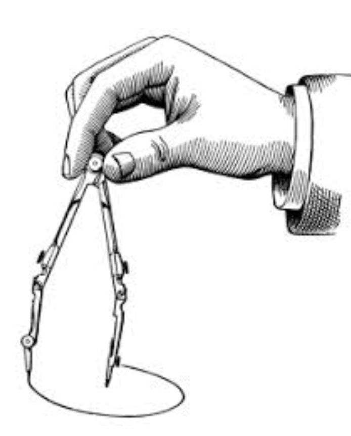
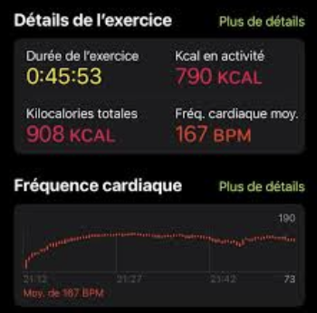
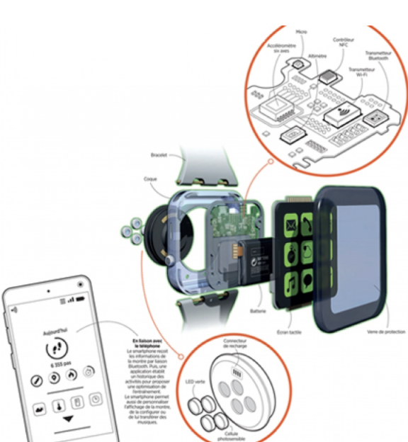
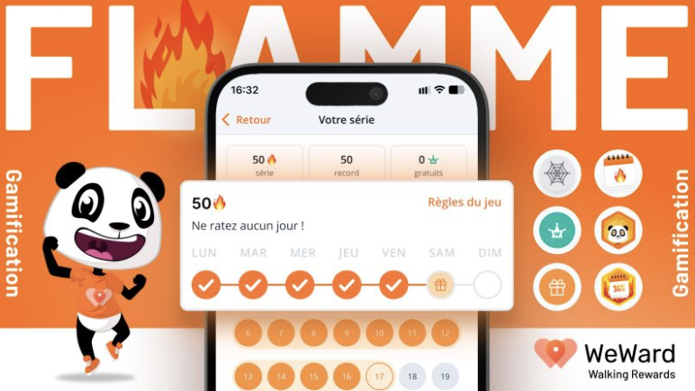
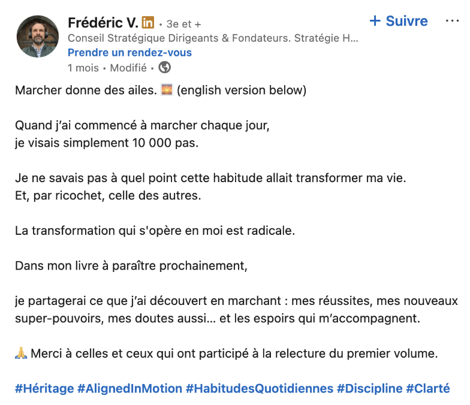
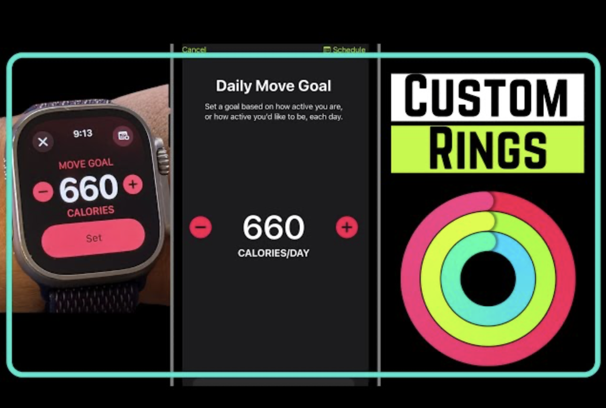
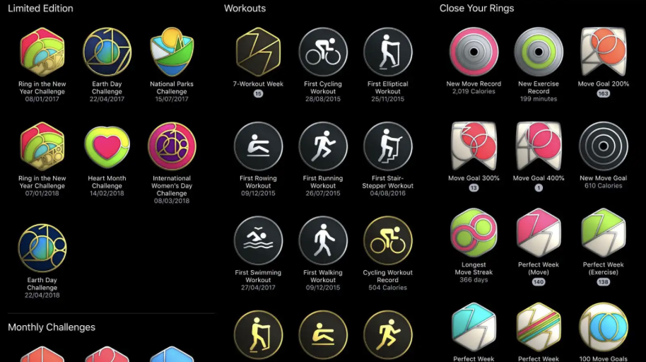
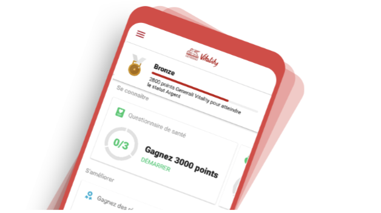
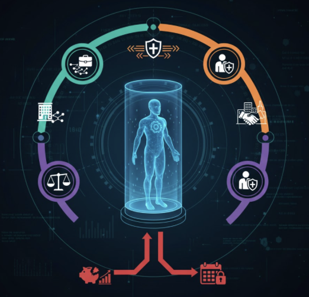
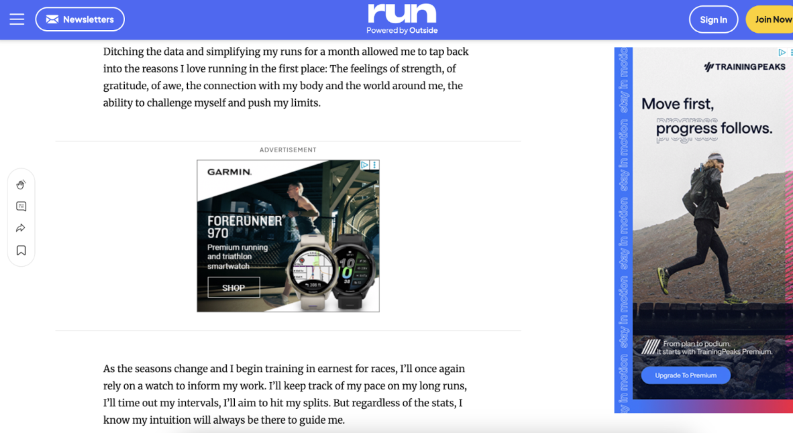

Introduction - Le pas : norme, donnée et contrôle
Bienvenue dans notre étude consacrée à la quantification des pas par les objets connectés. Ce projet interroge la manière dont la donnée du pas, érigée en norme de santé par les algorithmes et les stratégies marketing, participe à la construction d’un système de self-tracking qui, sous couvert d’optimisation individuelle, contribue à la marchandisation du corps et au renforcement des mécanismes de contrôle social.
Depuis une dizaine d’années, la quantification des corps s’est imposée comme une pratique quotidienne pour une part croissante de la population. Déjà en 2019, 4 Français sur 10 déclaraient “utiliser des objets connectés ou des applications dans le cadre de leurs activités sportives” (Les Échos, 2023), signe d’un marché en pleine expansion. Du simple podomètre aux smartphones et montres connectées, l’offre s’est diversifiée et chaque dimension du corps devient mesurable, traçable et comparable. Ces dispositifs, définis en 2018 par le Journal officiel comme des “objets capables d’envoyer ou de recevoir des informations via un réseau” (Journal Officiel, 2018), occupent désormais le quotidien, de la santé à la prévention médicale et à l’entretien sportif.
Cette prolifération s’accompagne d’un discours puissant : “s’entraîner comme un pro”, optimiser sa forme, prévenir les risques, devenir acteur de sa santé. Le marché mondial des applications de santé, estimé à “12,4 milliards de dollars en 2018 et annoncé à plus de 200 milliards en 2026” (Aromatario, 2020), s’appuie sur ces promesses. Les institutions publiques elles-mêmes y voient un levier de transformation : amélioration de la qualité de vie, systèmes de santé plus efficients, autonomisation du patient, réduction des inégalités d’accès aux soins, etc.
Pourtant, cette dynamique soulève une tension centrale. En rendant visibles et quantifiables des pans entiers de nos activités, les technologies portables n’offrent pas seulement de nouvelles ressources pour “mieux vivre”, elles redéfinissent aussi ce que signifie être en bonne santé, actif et performant. Le suivi quotidien des pas, devenu une métrique emblématique, illustre cette ambivalence : instrument d’autonomisation pour certains, il peut aussi produire des normes implicites comme une auto-surveillance ou une nouvelle forme de gouvernement des comportements (Sunstein et Thaler, 2008).
C’est cette tension entre promesse d’émancipation et logique de normalisation que nous proposons d’explorer à travers l’analyse des données de pas issues de NHANES.
Notre étude s’appuie sur un jeu de données issu de NHANES (National Health and Nutrition Examination Survey), un programme mené par les Centers for Disease Control and Prevention (CDC) aux États-Unis depuis la fin des années 1950. NHANES a été créé pour évaluer l’état de santé et la nutrition de la population américaine. Ses objectifs sont doubles : fournir des indicateurs fiables pour orienter les politiques publiques de santé et mettre à disposition de la communauté scientifique des données standardisées et comparables pour la recherche.
Dans les cycles 2011‑2012 et 2013‑2014, NHANES a intégré la collecte d’accéléromètres portés par les participants, afin de mesurer leur activité physique de manière objective. La base Minute‑level Step Counts, disponible sur PhysioNet (Koffman et Muschelli, 2025), contient des comptages de pas au niveau minute obtenus à partir des données brutes d’accéléromètres ActiGraph GT3X+ portés au poignet pendant sept jours consécutifs. Ces données ont été traitées via cinq algorithmes open-source et un algorithme propriétaire (ActiLife), appliqués aux mêmes mesures brutes. Cette pluralité méthodologique permet d’étudier la variabilité des mesures selon les algorithmes et de questionner ce que signifie réellement “compter un pas”.
Plusieurs revues académiques ont déjà exploité ce jeu de données pour analyser la distribution des pas, leurs corrélations avec la santé et les implications méthodologiques des différents algorithmes. C’est sur la base de ces travaux scientifiques que nous avons construit notre recherche. Notre approche combine analyse quantitative des données NHANES et entretiens auprès d’usagers et de professionnels. Elle nous permet d’interroger la production des mesures, leur interprétation et leur inscription dans les pratiques sociales, éclairant ainsi les tensions entre contrôle de soi, normes de performance et formes implicites d’auto‑surveillance.
I - L’histoire et les acteurs de la quantification du corps
La quantification du corps n’a pas toujours été liée à la santé, au bien-être ou à l’optimisation personnelle. Son histoire révèle une transformation progressive du statut du corps : d’un simple instrument de mesure au service de l’espace, il devient peu à peu un objet d’observation médicale, puis un capital à optimiser dans une société marquée par la performance.
Aux origines, la quantification ne s'intéresse pas directement à l’individu : elle sert d’abord à mesurer le monde. L’odomètre inventé dans l’Antiquité ou le podomètre développé au XVIᵉ siècle étaient pensés pour géométriser le déplacement humain. Ingénieurs militaires, topographes ou scientifiques comme Jean Fernel cherchaient alors à standardiser le mouvement pour en faire une unité fiable. Le « pas d’un homme moyen » n’a rien à voir avec la santé : il sert uniquement à convertir la marche en distance mesurable. Le corps n’a alors pas d’identité propre : il n’est qu’un outil mécanique anonymisé.
Cette logique change au XIXᵉ siècle lorsque la médecine s’empare de ces instruments de mesure. Le podomètre devient un support de rationalisation du corps : les médecins et hygiénistes l’utilisent pour organiser et contrôler l’activité physique des patients. Pour la première fois, la mesure sert à discipliner et réguler le corps humain. Le pas n’est plus seulement une unité géométrique, mais un indicateur destiné à vérifier le respect des prescriptions médicales et des normes de santé.
La dernière transformation se produit dans nos sociétés contemporaines. Avec l’émergence du mouvement Quantified Self dans les années 1990, et la diffusion massive des objets connectés, chacun peut désormais mesurer son sommeil, ses pas, son rythme cardiaque, sa productivité ou son niveau de stress. Le corps devient un capital à gérer, améliorer et optimiser. L’individu adopte la posture d’un gestionnaire de soi, encouragé par une idéologie néolibérale qui présente le temps comme un actif et chaque action comme un investissement.
Cette auto-mesure s’appuie sur un mécanisme technologique précis : l’association entre capteurs et algorithmes. Les données permettent alors de produire un continuum entre le normal et le pathologique, transformant des états ordinaires en variables de risque ou en indicateurs d’efficacité. En parallèle, la dimension sociale de ces données joue un rôle central. Les plateformes où l’on partage ses performances favorisent la comparaison, la valorisation des efforts et l’installation d’une dynamique de compétition continue. Les mesures deviennent ainsi un moteur de motivation, de distinction et parfois de pression.
Ainsi, la quantification du corps s’inscrit désormais dans une culture où chaque instant peut être transformé en donnée exploitable et chaque comportement en objectif à optimiser. Du pas standardisé de l’ingénieur à la fréquence cardiaque analysée par une montre connectée, le rapport au corps s’est ainsi complexifié, toujours davantage lié à la maîtrise, au contrôle et à la performance individuelle.
II - Comment compter les pas ?
L’écosystème des technologies de comptage de pas, du podomètre mécanique du XVIIe siècle aux objets connectés de santé (montres, applications, capteurs) repose sur une infrastructure technique complexe qui façonne ce que signifie “marcher” et ce que représente un pas. Souvent invisible pour l’utilisateur, cette infrastructure est essentielle pour comprendre comment les données corporelles sont interprétées.
La quasi-totalité des objets de comptage de pas repose sur un accéléromètre triaxial, un capteur qui mesure les accélérations du corps sur trois axes (x, y, z). Il enregistre les micro-mouvements du poignet, de la hanche ou du téléphone. Les données sont captées en continu, sous forme de signaux bruts. À ce stade, il n’y a aucun pas, seulement des variations d’accélération. C’est une technique que l’on retrouve dans notre jeu de données NHANES : les participants portent un accéléromètre à la hanche qui enregistre ces signaux bruts
Avant toute interprétation, le signal est nettoyé : filtrage du bruit, suppression de la gravité et lissage des oscillations. Ce pré-traitement repose sur des choix méthodologiques (fréquence d’échantillonnage, seuils, filtres utilisés) et ces choix influencent ce qui sera reconnu comme un pas.
Ainsi, un pas n’est pas identifié comme un geste isolé, mais comme un motif rythmique récurrent. Les algorithmes cherchent des oscillations périodiques, une amplitude minimale et une cadence compatible avec la marche humaine. Chaque algorithme définit donc ce qu’est un “vrai” pas et ce qui doit être ignoré. Notre jeu de données issues de la NHANES montre que les données brutes des accéléromètres sont transformées par 6 algorithmes différents (5 open source, 1 propriétaire) et chacun produit des mesures légèrement différentes. C’est ce qu’expliquent Koffman et Muschelli (2025) : le pas est variable selon l’algorithme utilisé.
Une fois que les pas sont comptés, ils sont agrégés (jour, semaine), comparés à des seuils (ex. 10 000 pas) et visualisés (anneaux, jauges, badges).
Le comptage de pas repose donc sur une norme implicite : une démarche régulière, une vitesse stable, une amplitude suffisante et absence de pathologies ou d’aides à la marche. Cette façon de quantifier les pas a plusieurs conséquences : non différenciation de l’âge et taux d’erreurs importants pour les démarches lentes ou irrégulières. De ce fait, le pas n’est pas une mesure universelle, mais une catégorie normalisée.
La donnée devient par conséquence, un indicateur de performance, un outil de comparaison sociale et un support de prescription comportementale. Le chiffre n’est plus descriptif, mais normatif.
III - Les effets sociaux de la quantification des pas
Économie de l’attention et outil de comparaison
Les plateformes de suivi d’activité ne se contentent pas de mesurer la marche : elles produisent une économie de l’attention. Badges, séries de jours consécutifs (streaks), classements, notifications et encouragements transforment les pas en contenus sociaux et en indicateurs de valeur personnelle. Contrairement à d’autres pratiques sportives, la marche ne requiert aucune intentionnalité particulière pour être mesurée : chaque déplacement devient automatiquement une donnée exploitable.
Cette captation continue nourrit une motivation quotidienne. En effet, les communautés numériques associées peuvent être perçues comme des espaces de soutien et de lien interpersonnel. Par ailleurs, le partage de données peut devenir un outil pour construire une identité quantifiée et reconnue socialement. Cependant, cette captation instaure une logique de comparaison constante et cette dynamique alimente les modèles économiques des plateformes.
Lien vers l'exemple de post LinkedIn sur le partage de données de pas.
(Exemple d’un post LinkedIn dans lequel un individu partage ses données et ses motivations à marquer 10 000 pas par jour.)
Ces mécanismes créent ce que Lupton (2016) décrit comme une “technologie de soi” numérique : le corps devient un projet à optimiser constamment, et la conformité aux données devient un marqueur moral et social, en plus d’un indicateur de santé. Le suivi de pas, apparemment neutre, participe ainsi à la normalisation d’un modèle corporel et temporel : rater un objectif, ralentir sa marche ou ne pas atteindre un “score idéal” est interprété comme un manquement individuel, amplifiant la responsabilité individuelle des individus.

Dans ce contexte, les données produites par un utilisateur deviennent des références normatives pour d’autres. Les pas de quelques-uns servent de base de comparaison, influençant la perception de sa propre condition physique et de sa “bonne” conduite en matière de santé. Comme le souligne Deborah Lupton (2012), les dispositifs numériques d’auto-suivi reconfigurent le sujet de la surveillance : ils encouragent non seulement à se surveiller soi-même, mais aussi à inviter les autres à le faire.
Discipline internalisée et soumission volontaire
Si la généralisation du suivi des pas repose sur une croyance largement partagée en la neutralité technique des outils de mesure, Fiore-Gartland et Neff (2015) ont montré que ces technologies produisent moins un contrôle réel qu’une illusion de maîtrise : en rendant certaines dimensions du quotidien visibles et calculables, elles orientent l’attention et redéfinissent ce qui mérite d’être interprété, corrigé ou amélioré.
Dans ce cadre, la marche est convertie en indicateur de bonne conduite. Les journées ne sont plus seulement vécues, elles sont évaluées. Une journée “réussie” devient une journée conforme aux seuils définis par l’interface, indépendamment des sensations corporelles ou des contraintes vécues. Comme l’explique Nathalie Paquet, CEO d’une start-up de la SporTech (Sporty Peppers) :
Le self-tracking des pas apparaît alors comme une forme de soumission volontaire, où les individus intègrent comme allant de soi des normes qu’ils n’ont ni produites ni discutées. Cette logique s’inscrit dans une conception occidentale du temps comme ressource rare, qu’il conviendrait d’allouer et de manipuler de manière optimale pour être performant (Mazmanian et al., 2015).
Gouverner le temps : quand marcher devient une obligation quotidienne
Les technologies du quantified self instaurent un régime où le temps devient un espace d’intervention algorithmique permanent. Comme le montrent Nagy, Eschrich et Finn (2020), ces technologies invitent les utilisateurs à déléguer la gestion de leur quotidien à des dispositifs techniques qui organisent, hiérarchisent et évaluent les activités journalières.
Dans le cas de la marche, l’objectif standard des 10 000 pas, loin de reposer sur un consensus scientifique, illustre la manière dont une norme arbitraire peut structurer les comportements. En l’intégrant par défaut dans leurs interfaces, des plateformes comme Apple Santé, Fitbit ou Withings incitent les utilisateurs à ajuster leurs pratiques quotidiennes selon des hypothèses implicites sur ce qu’est une activité physique “normale”.
Cette optimisation temporelle se matérialise par des objectifs journaliers gamifiés (anneaux Apple, notifications prescriptives telles que “vous êtes en retard sur vos objectifs aujourd’hui”). Ces dispositifs constituent une véritable “unité perceptive” (Ihde, 1979), distribuant ce qui compte dans la journée : il ne s’agit plus de se sentir bien, mais d’être quantitativement conforme.
La visualisation joue ici un rôle central. Les interfaces mettent en avant les éléments optimisables du corps (pas, fréquence cardiaque, VO₂max), tout en invisibilisant le contexte de l’activité (fatigue, douleurs, émotions ou contraintes sociales) comme l’ont montré les analyses de Rettberg (2020).
IV - Ce que la donnée ne montre pas
Les biais des dispositifs
Comme l’explique une étude de 2020, les capteurs “produisent moins une mesure brute qu’une interprétation computationnelle du corps” (Nagy, Eschrich et Finn, 2020). Le suivi des pas n’est pas neutre : il reflète et reproduit des inégalités liées à l’âge, au genre et à la condition physique ou morphologique. Aimé Muhoza rappelle que la conception de ces dispositifs privilégie les corps jeunes et en bonne santé : “la plupart des dispositifs disponibles sur le marché sont conçus pour des personnes en bonne santé ou des athlètes” (Muhoza, 2024). Les corps vieillissants, malades, en situation de handicap ou simplement atypiques se retrouvent invisibles dans cette architecture métrique.
D’abord, le facteur âge est une variable très importante. Les dispositifs de comptage de pas sous-estiment l’activité des utilisateurs plus âgés (+65 ans) qui marchent moins vite et avec une amplitude moins grande, ainsi que celle des utilisateurs d’âge moyen. Les modifications naturelles de la démarche et la vitesse de marche influencent la précision des appareils, révélant que le design est calibré pour des corps jeunes et en bonne santé. Véronique, 55 ans, témoigne :
D’un autre côté, les dispositifs de quantification de l’activité physique sont souvent conçus pour des corps masculins jeunes, valides et sportifs, ce qui crée un biais de genre. Les algorithmes et capteurs sont calibrés sur des profils types, supposant une amplitude de mouvement, une vitesse de marche et une force physique caractéristiques des hommes. Cette configuration a plusieurs conséquences, notamment une prise de mesure inégale qui sous-estime les performances féminines. Les mouvements des femmes, plus courts ou moins rapides en moyenne, sont moins bien détectés par les capteurs. Ainsi, les corps féminins doivent s’ajuster à une norme algorithmique masculine pour être considérés comme performants. Cette logique renforce la pression normative sur les femmes et les encourage à se conformer à des standards irréalistes, souvent invisibles mais socialement valorisés. Les femmes voient ainsi leurs performances sous-évaluées et moins valorisées socialement, renforçant une inégalité structurelle dans la reconnaissance sociale (Boldi et al., 2024).
Anxiété, dépendance et autorité algorithmique
Des études ont montré que le self-tracking intensif transforme une pratique censée améliorer la connaissance de soi en une source d’anxiété et de dépendance (Dong, 2025). En effet, les utilisateurs surveillent en permanence des indicateurs corporels et doutent de leurs sensations internes : fatigue ou bien-être ne suffisent plus à juger leur performance. Fiore-Gartland et Neff (2015) parlent d’une illusion de contrôle total, où la métrique algorithmique est perçue comme plus fiable que le ressenti corporel. Comme le formule Véronique :
Ainsi, le pouvoir de l’algorithme s’inscrit dans la capacité d’outils numériques à produire des diagnostics, des recommandations et des classements qui s’imposent aux utilisateurs comme des vérités objectives. Véronique en témoigne :
Ainsi, les dispositifs de quantified self ne mesurent pas tous les corps de manière équitable et de nombreux biais existent dans la mesure et dans la valorisation des données. Cette valorisation et cette pression algorithmique se couplent à la question de la monétisation des données.
Effets économiques et opacité de la donnée
Du point de vue des acteurs économiques, cette stratégie de discipline aux outils connectés est pleinement assumée. Nathalie Paquet, CEO de Sporty Peppers, reconnaît :
Cette justification éclaire la tension centrale du dispositif : la standardisation n’est pas une nécessité scientifique, mais un compromis entre efficacité algorithmique, lisibilité marketing et rentabilité économique.

Les données corporelles numériques sont souvent perçues comme opaques pour l’utilisateur. Dans les faits, elles circulent dans des infrastructures fermées (serveurs cloud, API) et peuvent être utilisées pour améliorer les services, alimenter la recherche et développer de nouveaux produits ou campagnes publicitaires. Van Dijck l’explique : “les données sont un capital commercialisable, selon une logique typique de capitalisme de plateforme” (van Dijck, 2018). Ainsi, elles circulent dans des écosystèmes fermés où l'interopérabilité reste restreinte et “les données personnelles sont souvent plus utiles et lucratives pour les créateurs de ces technologies que pour les utilisateurs finaux, car ils peuvent les revendre à d’autres entreprises” (Fallery, 2021).
Dans ce contexte, la question de la gouvernance est centrale. Fallery (2021), à propos du Health Data Hub, souligne les limites d’une éthique de la donnée fondée sur la transparence, tant “l’infrastructure est complexe, distribuée et asymétrique”. L’OCDE rappelle par ailleurs que “les données de santé (...) doivent être gérées avec discernement”. Pourtant, malgré le RGPD, l’utilisateur demeure pris dans un environnement technique où le consentement est limité par l’opacité structurelle des systèmes. Comme l’explique Arruabarrena (2016) “les dispositifs de quantified self instaurent une délégation de pouvoir au dispositif : mesurer implique déjà d’accepter une forme d’encadrement algorithmique”.
V - De la mesure à la norme
Le nombre de pas est devenu bien plus qu’une simple donnée : il s’agit d’une technologie de soi (Foucault, 1975) qui concrétise les récits néolibéraux du corps comme un projet jamais achevé. Les plateformes de self-tracking utilisent le nombre de pas et participent à la création de normes corporelles standardisées, en classifiant les utilisateurs via des algorithmes composés de biais liés au genre, à l’âge ou à la morphologie (Rohlinger, 2021). De plus, les classements et recommandations générés par ces plateformes renforcent ces logiques de sélection (Festic, Latzer & Smirnova, 2021) et le type d’activité influence la visibilité ; la marche, la course à pied ou le triathlon sont valorisés, tandis que des sports moins quantifiables, comme le ping-pong ou la danse, restent marginalisés.
Normativité, auto-surveillance et contrôle de soi
La surveillance de nos données corporelles génère des obligations implicites. Plusieurs usagers interrogés dans le cadre de cette étude ont évoqué un sentiment de compétition ou une pression à performer, pouvant produire du stress et des stratégies de justification des données jugées “insuffisantes”. Véronique explique :
Le désir de publier régulièrement ses performances peut ainsi être compris comme une manière de démontrer sa responsabilité individuelle en matière de santé et d’auto-amélioration, tout en pointant implicitement ceux qui ne s’y conforment pas (Soulé, 2025). La donnée devient un support moral : elle distingue les corps perçus comme “disciplinés” de ceux jugés “défaillants”. Ainsi, ces dispositifs engendrent une auto-surveillance continue, qui s’inscrit dans la logique foucaldienne d’“entrepreneur de soi” (Foucault, 1975). L’individu devient gestionnaire de son corps et de son temps, cherchant à optimiser chaque aspect de sa vie. Le suivi des pas, des calories ou du sommeil transforme la vie quotidienne en un projet de self-optimization, c’est-à-dire la recherche de la meilleure version de soi-même.
Gouvernance et moralisation de la santé
Les objets connectés de santé changent profondément la gestion du risque individuel, en particulier par son intégration aux programmes d’assurance. En France, on a vu apparaître les programmes de “wellness insurance” (Generali Vitality, AXA Pulsez votre santé, Malakoff Humanis Vigisanté) récompensant les assurés qui atteignent certains objectifs, comme 10 000 pas par jour, l’arrêt du tabac ou une alimentation saine. Les avantages prennent la forme de réductions, cadeaux ou bonus, encourageant les individus à adopter un “bon comportement”, via gamification et suivi numérique (Juston Morival et Redon, 2022). Ce changement traduit une individualisation du risque et les technologies de suivi participent à une forme de moralisation de la santé. En effet, ne pas atteindre ses objectifs peut être interprété comme un manquement individuel plutôt que comme un aléa. Ce glissement normatif soulève un enjeu critique de discrimination indirecte car ceux qui n’ont pas les ressources pour respecter ces normes peuvent se voir pénalisés (Samochowiec et Müller, 2021).
L'État, quant à lui, joue un rôle ambivalent. D’un côté, en tant que promoteur de santé publique, il voit dans ces données un outil de prévention efficace. De l’autre, en s’associant au secteur privé pour des programmes de “ville-santé” par exemple, il peut aussi devenir le garant d'une gouvernance douce de la santé individuelle.
Au-delà de l’individuel, le self-tracking contribue à une gouvernementalité numérique à grande échelle car les individus deviennent évaluables selon des métriques standardisées (pas, calories, VO₂max). Cette logique s’inscrit dans un continuum foucaldien de technologies de pouvoir, où le suivi de masse permet de surveiller, comparer et prescrire des comportements à l’échelle de populations (Foucault, 1977-78).
Le non-tracking peut dès lors constituer une stratégie de résistance, une manière de refuser de se conformer à des standards numériques qui définissent ce qui est “correct”, “valide” ou valorisé.
VI - Résister à la norme : déconnexion, détournement et réappropriation
Si pour certaines personnes, suivre le nombre de pas peut devenir un outil d’émancipation et de motivation, certaines personnes, au contraire, choisissent de ne pas pratiquer le self-tracking.
Le non-tracking comme résistance
Ne pas utiliser de dispositifs de self-tracking peut être vu comme un acte de résistance, un moyen de se défaire des normes numériques et de reconquérir l’autonomie corporelle. Le non-tracking permet de se libérer de la pression sociale liée à la visibilité de ses performances et de redéfinir sa relation au corps en dehors des standards algorithmiques. Nathalie Paquet, CEO de Sporty Peppers en témoigne :
Le suivi minutieux des temps, distances, trajectoires, fréquences cardiaques ou niveaux d’effort est présenté comme une promesse d’objectivité. Cependant, il produit davantage une illusion qu’une réalité. Les témoignages d’athlètes de haut niveau montrent de plus en plus les limites du self-tracking. Par exemple, l’athlète Kir Faraud a supprimé son compte Strava dans le but de “se reconnecter à elle-même” et a souligné que les plateformes de partage des performances sportives contribuent à structurer un environnement compétitif permanent.
Le refus du tracking peut alors être analysé comme une forme de résistance au régime de visibilité, de comparaison et de gamification permanente qui tend à détourner la pratique physique de ses finalités intrinsèques.
On peut cartographier ces résistances sur un spectre :
- D'un côté, le refus ou la sortie (le “déconnexionnisme”).
- De l'autre, des pratiques plus actives de détournement tactique et de piratage du système, telles que le data poisoning ou l'usage ironique.
- Une troisième voie émerge : celle de l'activisme des données ou de la réappropriation. Des collectifs de patients, par exemple, s'emparent de leurs données pour contester des diagnostics médicaux jugés réducteurs, ou des artistes les utilisent pour créer des œuvres critiques. Il ne s'agit plus seulement de refuser d'être mesuré, mais de disputer la signification des mesures et leur finalité.
Cependant, ces discours critiques sont publiés sur des plateformes (dans ce cas Run, éditée par Outside) dont l’économie repose en partie sur la publicité pour des montres Garmin. La critique de la quantification coexiste avec sa marchandisation. Cette tension montre que la résistance aux objets connectés constitue une tentative de reconstruire une autonomie corporelle face à des dispositifs qui, tout en promettant l’optimisation, risquent de produire une dépendance informationnelle et une perte de confiance dans le savoir sensible du corps.
Cette ambivalence signale un risque permanent de récupération. La critique de la quantification est elle-même susceptible d'être capitalisée, comme en témoigne le marché florissant du “digital detox” ou le marketing de marques outdoor vantant l'authenticité sans objet connecté. Au-delà du geste de rupture, la résistance aux objets connectés implique peut-être de cultiver une nouvelle éthique de la connaissance de soi, réhabilitant la valeur de l'attention aux sensations, à l'ambiguïté du vécu et aux états qui échappent par nature à toute quantification.
Conclusion - Quelles leçons tirer
La donnée du pas dépasse largement le simple suivi d’activité : elle normalise les comportements, structure les rapports sociaux et soutient des logiques économiques. Ce qui semblait un outil neutre devient une technologie de contrôle du corps, qui fixe des rythmes, définit des seuils et produit une vision particulière de ce qu’est “être actif”.
Au niveau individuel, le comptage quotidien instaure une auto-surveillance qui transforme chaque pas en preuve de discipline, de motivation ou de conformité. La santé se confond avec l’atteinte de l’objectif, sans tenir compte des contextes ou des corps qui échappent à la norme.
Socialement, le pas crée des hiérarchies implicites et peut exclure celles et ceux dont la marche ne correspond pas au modèle dominant. Les inégalités se renforcent, sous couvert de responsabilité individuelle et de moralisation des comportements
Enfin, ces données nourrissent une économie où le corps devient une ressource valorisable : les plateformes captent et revendent les informations, transformant l’activité physique en matière première pour un capitalisme de surveillance.
La norme du pas n’est donc ni naturelle ni neutre. Mesurer, c’est participer à fabriquer le réel. Réfléchir à l’usage de ces données, et aux valeurs qui guident leur collecte, est essentiel pour décider comment nous voulons que nos corps soient comptés.
Ressources et bibliographie
- Alm, D. (2025, août 19). No Data, No Apps—Meet the Sub-Elites Just Running by Feel. Run. https://run.outsideonline.com/road/road-culture/the-sub-elites-saying-no-to-running-apps/
- Aromatario, O. (2020). Applications santé, objets connectés, interfaces digitales à distance dans le champ de l’alimentation et de l’activité physique : conditions d’efficacité et modalités de prise en compte des inégalités sociales de santé. Université de Rennes 1.
- Arruabarrena, B. (2016). Le Soi augmenté : les pratiques numériques de quantification de soi comme dispositif de médiation pour l’action. Thèse de doctorat en SIC, CNAM.
- Assurance Prévention (2025). Doit-on vraiment faire 10 000 pas par jour ?
- Boldi, I., et al. (2024). Gendered Norms in Self-Tracking Platforms. Journal of Digital Health.
- Dong, M. (2025). Investigating the Tracking Anxiety and Dependence of Smartwatch Users Based on Physiological and Fitness Data. International Journal of Human–Computer Interaction, 41(13), 8153–8166.
- Fallery, B. (2021). « La Plateforme De Données De Santé Health Data Hub – Une impossible gouvernance éthique des données massives ? ». Revue Française de Gestion, 141–159.
- Felicioli, M. (2021). Rapport au corps à travers le sport : pratiques info-communicationnelles des jeunes sur les réseaux socio-numériques et influence sur leur estime de soi. INSPE d’Aquitaine, DUMAS.
- Festic, N., Latzer, M., & Smirnova, S. (2021). Algorithmic Selection and Social Visibility in Fitness Apps.
- Festic, N., Latzer, M., & Smirnova, S. (2021). Algorithmic Self-Tracking for Health: User Perspectives on Risk Awareness and Coping Strategies. Media and Communication, 9(4), 145–157.
- Foucault, M. (1975). Surveiller et punir. Naissance de la prison. Gallimard.
- Gleisner, D. (2025, 24 février). I Ran Without a Watch for a Month. It Completely Changed My Running. Run. https://run.outsideonline.com/gear/i-ran-without-a-watch-for-a-month-it-completely-changed-my-running/
- Journal Officiel (2018, 11 janvier). Objet connecté.
- Jung, E. H., & Kang, H. (2022). Self-Determination in Wearable Fitness Technology: The Moderating Effect of Age. International Journal of Human–Computer Interaction, 38(15), 1399–1409.
- Koffman, L., & Muschelli, J. (2025). Minute level step counts and physical activity data from the National Health and Nutrition Examination Survey (NHANES) 2011–2014 (version 1.0.1). PhysioNet. RRID: SCR_007345.
- Le Guiniec, R. (2023). Corps, genre et performance dans les technologies du sport.
- Le Monde (2025, 2 novembre). « Je me demande parfois si je ne fais pas des sorties juste pour Strava » : comment les réseaux sociaux dopent le narcissisme sportif.
- Les Échos (2023). Comment les montres connectées ont changé le sport amateur.
- Lyon, D. (2018). Surveillance Society: Monitoring Everyday Life. Polity Press.
- Morival, J., & Redon, R. (2022). « Les nouveaux produits d’assurance à dimension comportementale dans l’entreprise ». In P. Batifoulier & M. Del Sol (dir.), Plus d’assurance santé pour moins de protection ? Le patient face au marché (pp. 199–209). IODE.
- Muhoza, A. (2024). Conception d'un dispositif médical intelligent multi-capteur pour la détection de la mobilité faible. Université Clermont Auvergne.
- Nagy, P., Eschrich, J., & Finn, E. (2020). Time hacking: how technologies mediate time. Information, Communication & Society, 24(15), 2229–2243.
- OCDE (2022). Gouvernance des données de santé à l’ère du numérique. Éditions OCDE, Paris.
- Onno, J. (2024). Des dispositions aux dispositifs de Quantified Self : les dimensions esthétiques et genrées de la mise en données du corps. Émulations, 48, 71–98.
- Pierre, J. (2014). De l’identité numérique à l’individu transmédiatique. Mediadoc n°13, APDEN.
- Rettberg, J. W. (2020). Situated data analysis: a new method for analysing encoded power relationships in social media platforms and apps. Humanities and Social Sciences Communications, 7(1), 1–13.
- Rohlinger, D. A. (2019). The Sociology of Self-Tracking and Embodied Technologies. Routledge.
- Samochowiec, J., & Müller, A. (2021). « La montre connectée nuit-elle à la solidarité ? ». Gottlieb Duttweiler Institute Research Paper, n°4620194.
- Saraceno, M. (2023). « Histoire technique du podomètre. De la genèse d’un capteur du quotidien ». Communications, 112(1), 35–48.
- van Dijck, J., Poell, T., & de Waal, M. (2018). The Platform Society. Oxford University Press.